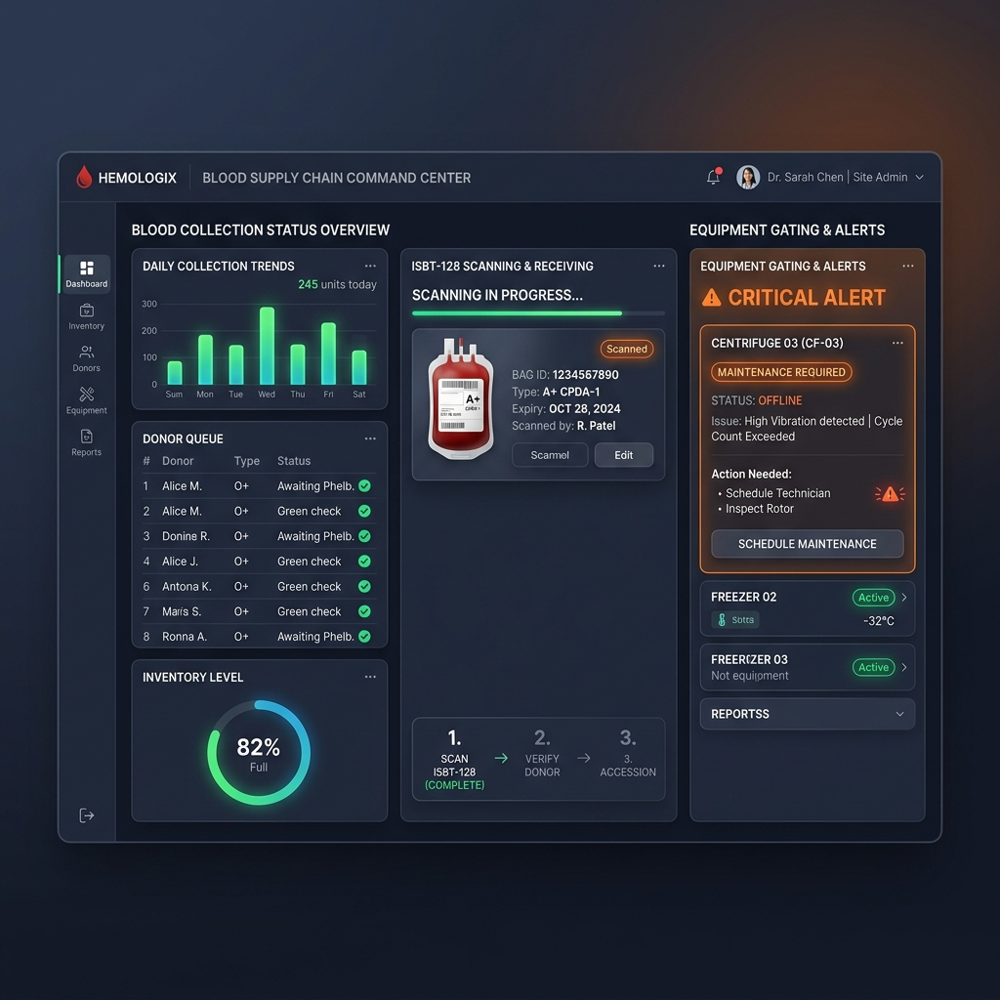

VN-BECS V1.0 has transitioned from a linear SOP model to a high-resilience **6 Core Functional Node** architecture. This manual guides all personnel through mission-critical tasks within their assigned nodes, ensuring a safe and efficient Vein-to-Vein blood management lifecycle.
The LIMS node manages the primary intake and identity definition of the blood supply chain. It establishes the digital twin for each physical donation by binding the donor's citizen identity to the ISBT-128 standard barcode protocols, integrating with the Vietnam National CCCD database.
The LIMS subsystem operates through four sequential stages with strict one-way gating, ensuring that any unit not cleared in a prior phase cannot proceed further in processing or distribution:
Collect donor demographic data, run real-time format validation on the 12-digit Vietnam National CCCD, and instantly filter donor eligibility based on age limits (16 to 65 years).
Perform infectious disease markers (IDM) and Nucleic Acid Testing (NAT). Prior to validation, the unit is permanently locked in "PENDING" status to block any dispatch.
Bind the cleared donor record to a unique ISBT-128 DIN (Donation Identification Number) and perform component fabrication (Red Blood Cells, Plasma, Platelets).
Complete all quality certifications and outbound release audits, digitally releasing the cleared blood units to the supply chain for HUB allocation.
This interface handles donor pre-screening and registry intake, embedding a validator for Vietnam CCCD and a chip card simulator. It supports automatic identification of rare phenotypes like Rh- negative, instantly activating high-contrast yellow tags for downstream protection.
Figure 1.1: LIMS Donor Enrollment Console
This interface manages blood collection, ISBT-128 DIN registration, and component fabrication. The screen demonstrates real-time safety interlock policies blocking the workflow under non-compliant equipment status. It establishes 1-to-1 digital binding between the DIN and the donor's national ID, ensuring end-to-end traceability for adverse event lookbacks.

Figure 1.2: LIMS Phlebotomy & Gating Console
| Field Name | Data Type | Validation/Format | Description & Value Definition |
|---|---|---|---|
| Donor ID | String (UUID) | Read-only, auto-generated | The unique identifier for the donor within the system, used to link historical donation records. |
| Full Name | String | Length ≥ 2 chars, uppercase English | The legal name of the donor. Example: NGUYEN VAN A. Numeric characters are not allowed. |
| National ID (CCCD) | String | 12-digit numeric | Vietnam National Identity Card number. The first 3 digits represent the province code (001 to 096), and the 4th digit represents the century and gender (0-9). |
| Date of Birth | Date | YYYY-MM-DD | The donor's birth date. The system uses this to calculate age in real-time. Underage or over-aged donors will be rejected. |
| Blood Type | Enum | O | A | B | AB | The donor's primary ABO blood group classification. |
| Rh Factor | Enum | Positive (+) | Negative (-) | The RhD blood group classification. Negative is flagged in high-contrast yellow as a rare phenotype. |
| Field Name | Data Type | Validation/Format | Description & Value Definition |
|---|---|---|---|
| Donation ID (DIN) | String | Starts with =, length ≥ 13 chars |
ISBT-128 standard Donation Identification Number. Format: =W[4-digit facility] [2-digit year] [6-digit sequence]. Example: =W0000 24 102938. |
| Target Volume | Integer | 200 to 600 (unit: mL) | The volume of blood expected to be collected during this session. The default value is 500. |
| Collection Type | Enum | WholeBlood | Apheresis |
WholeBlood: Whole blood collection (200~600mL).Apheresis: Apheresis collection (limit 300mL, exceeding will trigger an alert).
|
To enforce 100% clinical safety, the system deploys "Hard Gating" interlocks at both frontend and database layers. When conditions are not met, the action buttons are grayed out and locked, accompanied by a prominent red SAFETY INTERLOCK ACTIVE warning:
001-096), the registration button is hard-locked with a validation error message.
Date of Birth must fall within the configured eligibility window (16 to 65 years under Vietnam standards). If the calculated age is < 16 or > 65 years, the system rejects the submission, eliminating compliance risks from the source.
Expired, the Process Diagnostics button in LIMS is instantly disabled, throwing a hard reagent expiry block.
MaintenanceRequired, the system blocks all diagnostic runs and prompts a critical maintenance warning.
MaintenanceRequired, the system blocks the Fabricate Components action, requiring equipment servicing to unlock the workflow.
idmStatus === 'REACTIVE', the Fabricate Components button is permanently disabled, showing QUARANTINE RESTRICTED. The system permanently routes the unit to the quarantine ledger, blocking any outbound dispatch.
The LAB node serves as the technical gatekeeper, ensuring all units meet national safety screening standards.
All incoming units are locked in a "Quarantine" state until NAT and IDM testing results are verified. Dispatch is strictly prohibited until clearance.
Key processes include automated infectious disease screening, precision ABO/RhD typing, and component fabrication.
The HUB node is the logistics engine, managing dynamic inventory allocation and precision distribution.
| Core Tech | Operation | Strategic Value |
|---|---|---|
| FEFO Algorithm | Recommends units closest to expiry. | Reduces national wastage to < 2%. |
| IoT Cold Chain | Real-time temperature telemetry. | Ensures unit viability during transit. |
The HOSPITAL node is the frontline execution point for patient orders and transfusion safety.
Staff place orders directly to the HUB with priority levels: Routine, ASAP, and STAT.
Scanning both patient wristbands and bag barcodes. System locks the process if a mismatch is detected.
The NATIONAL node provides commanders with a macro-view of the entire national supply chain grid.
Includes real-time inventory maps, logistics efficiency matrices, and crisis simulation tools for mass-casualty event planning.
The MDM node is the administrative core, managing organizational nodes, user permissions, and product catalogs.
Administrators must configure RBAC policies here to ensure functional isolation between different tactical roles.
--- END OF COMMAND MANUAL ---